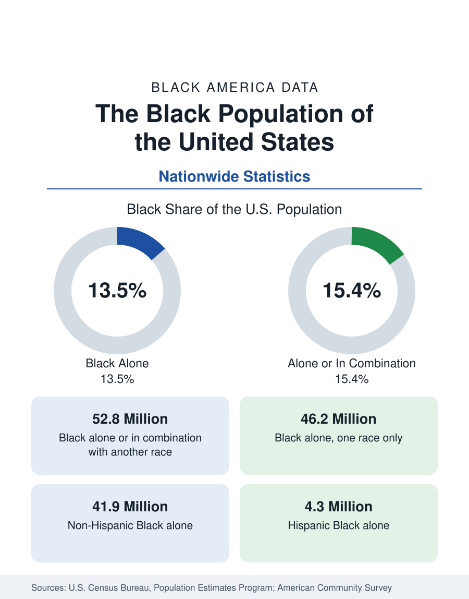

Black Census
The Black Population of the United States: Size, Definitions, and Distribution
The Black population of the United States totals 52.8 million — 15.4 percent of the nation. How the Census Bureau defines and counts the population, and where it lives.

The Black population of the United States is one of the largest and most closely measured demographic groups in federal statistics. According to United States Census Bureau population estimates, the Black population — counting everyone who identifies as Black alone or in combination with another race — stands at 52.8 million people, or 15.4 percent of the total United States population. This article explains how that figure is constructed, how the Census Bureau's race categories work, and how the population is distributed across the country.
How the Census Bureau Counts Race
Federal statistics divide the Black population into nested categories, and understanding them is essential to reading any figure in this reference. The broadest measure, called Black alone or in combination, counts every respondent who marks Black or African American on the census form, whether or not they also mark another race. That is the 52.8 million figure. The narrower measure, Black alone, counts only respondents who mark Black and no other race: 46.2 million people, or 13.5 percent of the national population.
A third distinction cuts across the first two. The Census Bureau treats Hispanic origin as an ethnicity separate from race, so the Black population is further divided into Non-Hispanic Black alone, at 41.9 million, and Hispanic Black alone, at 4.3 million. News reports that appear to disagree about the size of the Black population are usually quoting different rows of this table. Throughout this reference, each article states which measure it uses, and figures from different measures are never mixed in a single comparison.
Where the Numbers Come From
Three federal instruments produce the statistics used across this site. The decennial census, conducted every ten years, is a complete count and sets the benchmark totals. The American Community Survey, conducted every year, samples millions of households and produces the detailed social and economic characteristics — income, education, employment, housing — that fill most of the articles in this reference. Between censuses, the Census Bureau's Population Estimates Program updates the national and county totals each year using births, deaths, and migration records. The 52.8 million figure above is a population estimate of this kind.
Geographic Distribution
The Black population is distributed unevenly across the United States, and the broad pattern has been stable for decades. More than half of Black Americans live in the South, the region that held the large majority of the population through the nineteenth and early twentieth centuries. The Great Migration of the twentieth century redistributed millions to the Northeast, Midwest, and West, and since the 1970s a sustained return movement — sometimes called the New Great Migration — has drawn Black households back to Southern metropolitan areas, particularly in Georgia, Texas, Florida, and the Carolinas.
At the state level, Texas, Florida, New York, Georgia, and California hold the largest Black populations in absolute terms, while the District of Columbia and Mississippi record the highest Black shares of their total populations. At the metropolitan level, the largest concentrations are found in New York, Atlanta, Chicago, Dallas, Houston, and Washington. The Black Cities section of this reference profiles these populations metro by metro, and the state profiles under this census section give each state's totals, shares, and county patterns.
Reading the Data
Three cautions apply to every figure in this section. First, percentages describe shares of a population, not counts: a state can have a high Black share and a small Black population, or the reverse. Second, survey figures carry margins of error, which grow as the geography shrinks; county and city estimates from survey samples should be read as ranges, not exact counts. Third, definitions change: the Census Bureau revised its race and ethnicity questions in recent cycles, which improved measurement of multiracial identity and modestly shifted category totals independently of any real population change. Where a change in measurement affects a comparison, the articles in this reference say so.
The articles that follow in this census section apply these definitions to the questions readers bring most often: the Black population of each state, the growth of the population over time, its age structure, household and family composition, ancestry and place of birth, and the foreign-born Black population. Each article is built from the published federal figures named in its source line, in the same definitions used here, so that numbers can be compared across the whole reference with confidence.
More in Black Census
Black Median Household Income in the United States
Black median household income stands at $56,490 in the Census Bureau's annual income report — how the figure is measured, how it compares, and what drives it.
The Black Poverty Rate: Levels, Children, and the Long Trend
The official Black poverty rate is 17.1 percent — against 11.1 percent nationally and 7.7 percent for non-Hispanic White Americans. How poverty is measured and what the data show.
The Black Homeownership Rate: The Gap and Its History
The Black homeownership rate stands at 44.7 percent, against 72.4 percent for White households — a gap wider than when discrimination in housing was legal. The data and its drivers.
Source: U.S. Census Bureau, Population Estimates Program (July 1, 2025 estimates); American Community Survey.